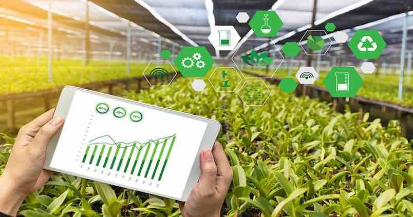

Al implementar “Eco-Chamber” a los cultivos, se pretende mejorar la calidad de de estos y crear un manera eficiente de cultivar diversas plantas, esto se ve posible ya que buena parte de los materiales que se van a usar para su realización ya están a nuestra disposición así que solo se esperaría obtener los materiales que hagan falta y la colaboración de los docentes encargados de los cultivos para la proporción de datos acerca de los cultivos que se están trabajando en el huerto para darle el correcto uso al ambientador.
- Dar a conocer a los estudiantes de la institución Colegio Español Padre Arrupe,una estrategia para un sistema sostenible,con el fin de crear un ecosistema inteligente para el aprovechamiento de los cultivos.
- 1- Realizar una investigación de cultivos para evaluar los nutrientes que el terreno contiene.
- Establecer contactos con diferentes entidades que ayuden con el cuidado del medioambiente.
- 3- Capacitar a las personas el uso del ambientador inteligente para un ecosistema con el fin de utilizarlos en sus cultivos.
- La interacción entre el ambiente, el ecosistema y la agricultura presenta desafíos que afectan la productividad, seguridad alimentaria y sostenibilidad ambiental. El cambio climático aumenta eventos extremos como sequías e inundaciones, causando pérdidas en cultivos y economía agrícola. La degradación del suelo por erosión, agroquímicos y prácticas insostenibles reduce la fertilidad y capacidad de retención de agua, afectando el crecimiento de los cultivos. Además, nuevas plagas y resistencia a pesticidas generan desafíos en su gestión, con impactos negativos en salud humana, biodiversidad y salud del suelo.
- El desafío radica en lograr un equilibrio entre el desarrollo económico, la conservación del entorno natural y el bienestar social en el ecosistema. Este enfrenta presiones crecientes debido al desarrollo económico, la urbanización y la explotación de recursos, lo que ha causado degradación, pérdida de biodiversidad y disminución de servicios ambientales. La degradación afecta la calidad de vida local, con la destrucción de hábitats, el calentamiento global y la contaminación atmosférica como factores clave derivados de la actividad humana.
- La implementación del "Eco-Chamber" en los cultivos tendrá un impacto positivo en la calidad de los cultivos y en la eficiencia del cultivo de diversas plantas. Se espera que al proporcionar un ambiente controlado y óptimo para el crecimiento de las plantas, el "Eco-Chamber" mejore la salud de los cultivos, aumente los rendimientos y reduzca la necesidad de recursos como agua y fertilizantes. Además, al recopilar datos sobre las plantas en el huerto y utilizarlos para ajustar el uso del "Eco-Chamber", se espera que el sistema pueda adaptarse de manera efectiva a las necesidades específicas de cada cultivo, maximizando así su efectividad. En consecuencia, se anticipa que la implementación del "Eco-Chamber" contribuirá a una agricultura más sostenible y productiva.
Objetivos
Justificacion
Planteamiento del problema
Hipotesis
